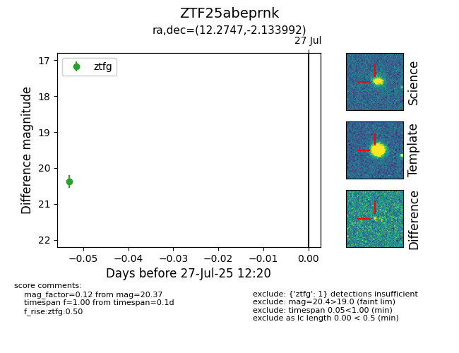

Target ZTF25abeprnk at 2025-07-27 12:20, see:
FINK: fink-portal.org/ZTF25abeprnk
Lasair: lasair-ztf.lsst.ac.uk/objects/ZTF25abeprnk
ALeRCE: alerce.online/object/ZTF25abeprnk
alt names
ZTF25abeprnk (ztf,fink)
coordinates:
equatorial (ra, dec) = (12.2747,-2.13399)
galactic (l, b) = (121.5490,-64.99946)
photometry
last ztfg=20.37
1 ztfg detections
